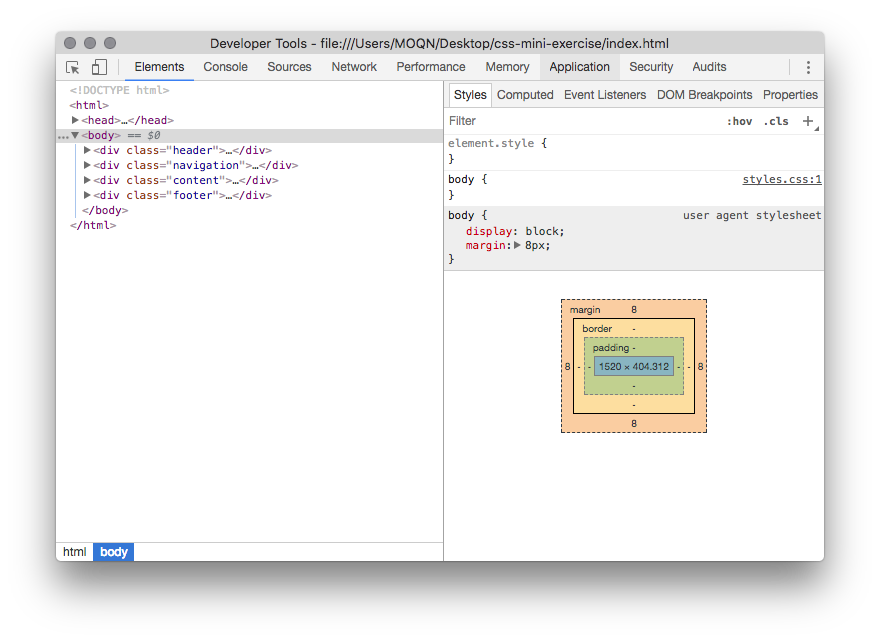

Developer Tools
Open up Chrome, right click and select Inspect
You can change the styling in the developer tools but it's not going to save.
CSS Syntax
selector {
property: value;
}

To select specfic item in HTML: .customclassname and #id
Common mistake: Forgetting the semicolon
Box Model
When something is not positioned the way you want to, always check the inspector. Look at the box model in the inspector to see where the extra space is coming from.
For example, let's see why the margin before the "Flexbox" section is different than everything else.
Display and Position
Display
This is display: inline; The span tag in HTML is by default set to display: inline. More about the span tag here.
This is display: inline-block; They work very similarly with inline but you can also add a height to them. Inline-block is commonly used for creating navigation bars.
Position
Everything in HTML is by default set to position: static
We have a div that is set to position:fixed on this page. Which one is it?
It is relative to its normal position.
And this is positioned relative to the nearest positioned ancestor (meaning anything that is not position: static). So to have the positioning take effect, you should put the div inside a relative positioned div.
A Flexbox
Below is the container and we add display: flex; on the container.
How do you align the items differently if the boxes have different height?
When you don't know the answer, consult the Complete Flexbox guide.
I hope this is helpful!
Best,
Cindy